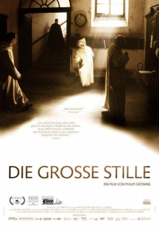

#6266 Die Große Stille
 
 IMDB-Wertung: 7.4 / 10
IMDB-Wertung: 7.4 / 10  Metascore: 0
Metascore: 0 
Dokumentarfilm von 2005. Regisseur Philip Gröning dokumentiert in Die große Stille das Leben im legendenumwobenen Kloster La Grande Charteuse. Sechs Monate lang war er dort zu Gast und hat die Mönche in ihrem Alltag begleitet. Ausgezeichnet mit dem Europäischen Filmpreis.
Jahr: 2005
Dauer: 161 Minuten
FSK: 0
Land: Frankreich Studio: X Verleih AGTonspuren:
Untertitel:
Auflösung: SD (640x360) Größe: 445 MB
Genre: Dokumentation
Regisseur: Philip Gröning
Drehbuch: Black Dog Films
Soundtrack:
Darsteller:
Datei: X:\Dokumentationen\Kirche\Große Stille, Die (2005, FSK0, 640x360).mp4 seit 24.05.2017
Festplatte: HD Serien(SU-Z)+Dokus+Musik
 Es gibt insgesamt 19 Filme in der Gruppe 'Dokumentationen\Kirche'
Es gibt insgesamt 19 Filme in der Gruppe 'Dokumentationen\Kirche'